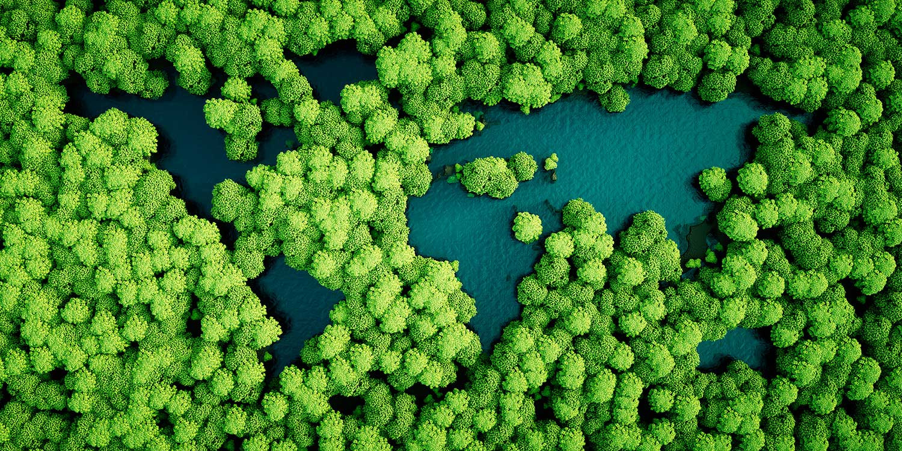
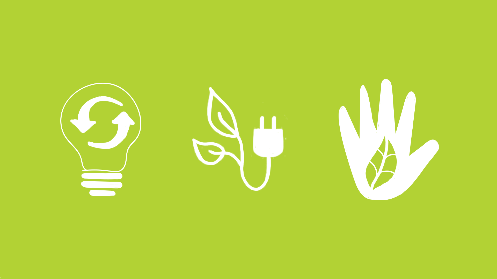
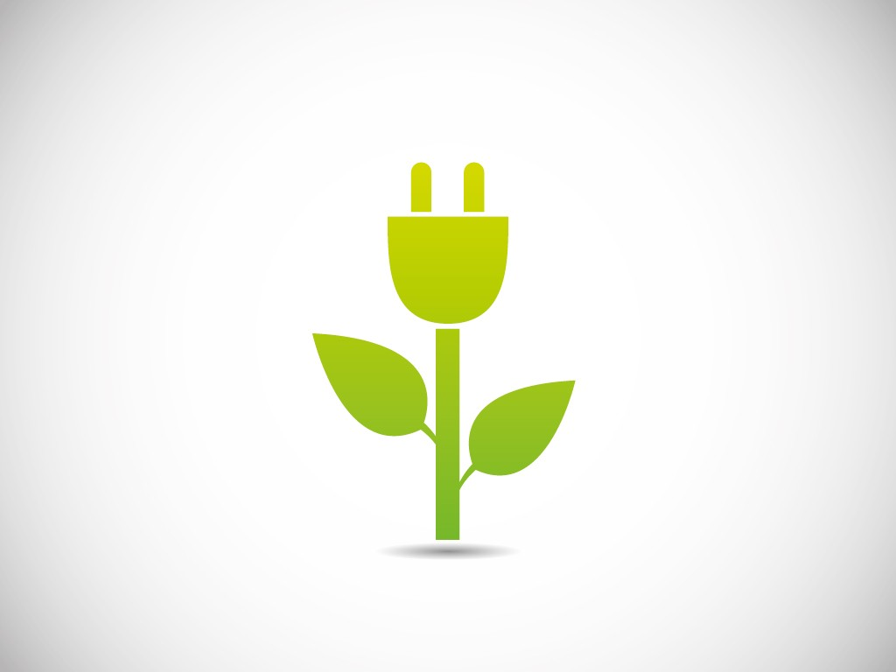
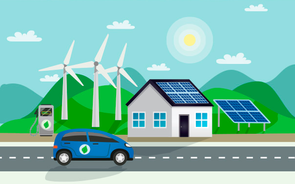

Energia limpa e acessível
Sobre
Metas
Brasil e Mundo
|
|
Energia limpa e acessível
|
Sobre |
Metas |
Brasil e Mundo |
|
Metas das Nações Unidas |
1 - Até 2030, assegurar o acesso universal, confiável, moderno e a preços acessíveis a serviços de energia. |
|
De acordo com a ONU a Redação original é clara e adequada ao
Brasil, pois reflete a preocupação com a população de renda
baixa e com áreas não atendidas por serviços de energia, que são
questões atacadas pelas políticas de energia do governo
brasileiro. Conceitos importantes mencionados na metaO "Acesso Confiável" que considera a visão do consumidor e seu grau de confiança no fornecimento de energia que no Brasil é uma obrigação legal, e as "Energias Modernas” Que São as novas Energias limpas e Renováveis, que provocam menor impacto no Meio Ambiente e menor emissão de gases efeito estufa. Contrapõe as energias modernas atuais e as energias em desenvolvimento às antigas, que estão sendo substituídas: como a Lenha, Carvão, Petróleo etc. |
|  |
2 - Até 2030, aumentar substancialmente a participação de energias renováveis na matriz Energética Global |
|
No Brasil até 2030, manter elevada a participação de energias renováveis na matriz energética nacional, A
redação da meta foi adequada para a realidade brasileira, visto que a participação de energias renováveis na
matriz energética nacional já é bastante elevada 41,2% em 2015 (Fonte: Balanço Energético Nacional 2016,
Empresa de Pesquisa Energética- EPE).
Em 2012, o Brasil ocupava a Décima Segunda posição no Ranking das nações que menos emitem gases de efeito
estufa devido a produção e uso de energia, apesar de ser a sexta economia do mundo naquele ano. Temos um
dado muito interessante segunda a Fonte Empresa de Pesquisa Energética, o Brasil possui a participação de
energias renováveis cerca de 78% e no mundo apenas 22%.
Além disso, o Plano Nacional de Energia (PNE) para 2050 está em elaboração e, nesse processo, as estimativas
para 2030 estão sendo revistas. Diversos fatores como alterações de preço, de demanda, da sazonalidade
relacionadas às energias renováveis (solar, eólica etc.) Mas apenas a partir desse plano será possível
estabelecer valores específicos para a participação de energias renováveis na matriz energética nacional
Conceitos importantes mencionados na metaEnergias Renováveis são as provenientes de recursos naturalmente supridos e renovados, Tais como o sol, vento, a chuva, as marés e a energia Geotérmicas, ou as resultantes de fontes que se renovam por meio da intervenção apropriada do ser humano, como a Biomassa. |
|  |
3 - Até 2030, dobrar a taxa global de melhoria da eficiência energética. |
|
Isso quer dizer que haverá uma ampla cooperação internacional para facilitar o acesso a pesquisa e
tecnologias de energia limpa, incluindo Energias renováveis, eficiência energética e tecnologias de
combustíveis fósseis avançadas e mais limpas, e promover o investimento em infraestrutura de energia e em
tecnologias de energia limpa.
No Brasil até 2030, aumentar a taxa de melhoria da eficiência energética da economia brasileira, a
justificativa para a adequação foi de tratar de dois assuntos distintos a Cooperação internacional e
Investimentos em infraestrutura.
Conceitos importantes mencionados na metaO Brasil deve utilizar energias limpas. Energias Limpas são as que não liberam, durantes o seu processo de produção ou de consumo, Resíduos ou gases poluentes geradores do efeito estufa e do aquecimento global. |
4 - Até 2030, reforçar a cooperação internacional para facilitar o acesso a pesquisa. |
|
Tecnologias de energia limpa, incluindo energias renováveis, eficiência energética e tecnologias de
combustíveis fósseis avançadas e mais limpas, e promover o investimento em infraestrutura de energia e em
tecnologias de energia limpa.
No Brasil a justificativa para essa adequação foi a despeito da meta tratar de dois assuntos diferentes a
cooperação internacional e investimento em infraestrutura.
Conceitos importantes mencionados na metaEnergias limpas são as que não liberam, durante seu processo de produção ou de consumo, resíduos ou gases poluentes geradores do efeito estufa e do aquecimento global. |
|  |
5 - Até 2030, expandir a infraestrutura e modernizar a tecnologia |
|
Para o fornecimento de serviços de energia modernos e sustentáveis para todos nos países em desenvolvimento,
particularmente nos países menos desenvolvidos, e nos países em desenvolvimento sem litoral, de acordo com
seus respectivos programas de apoio.
Conceitos importantes mencionados na meta"Serviços de energia moderna" são os que disponibilizam energias limpas e renováveis, com menor impacto no meio ambiente e menor emissão de gases de efeito estufa. |
|  |
| Grupo 5, ODS 7 |